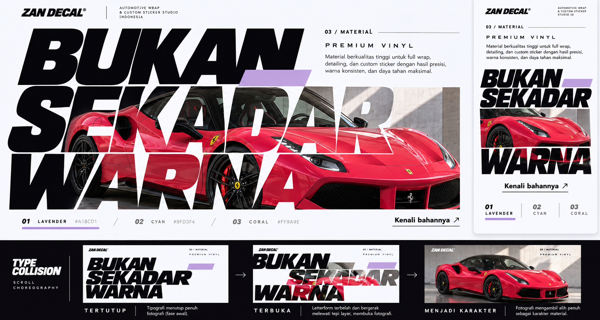
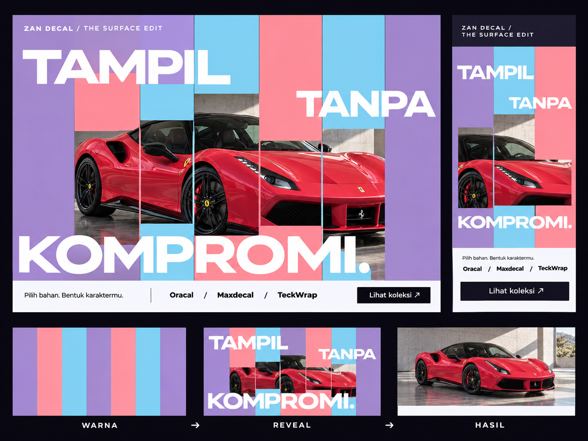
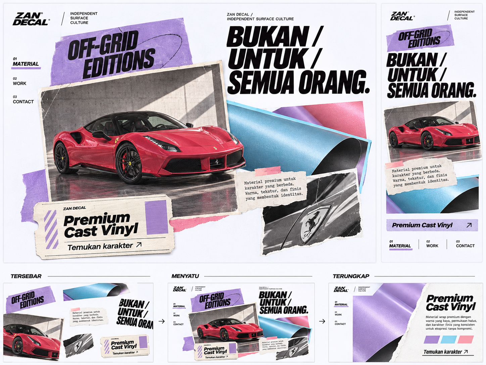
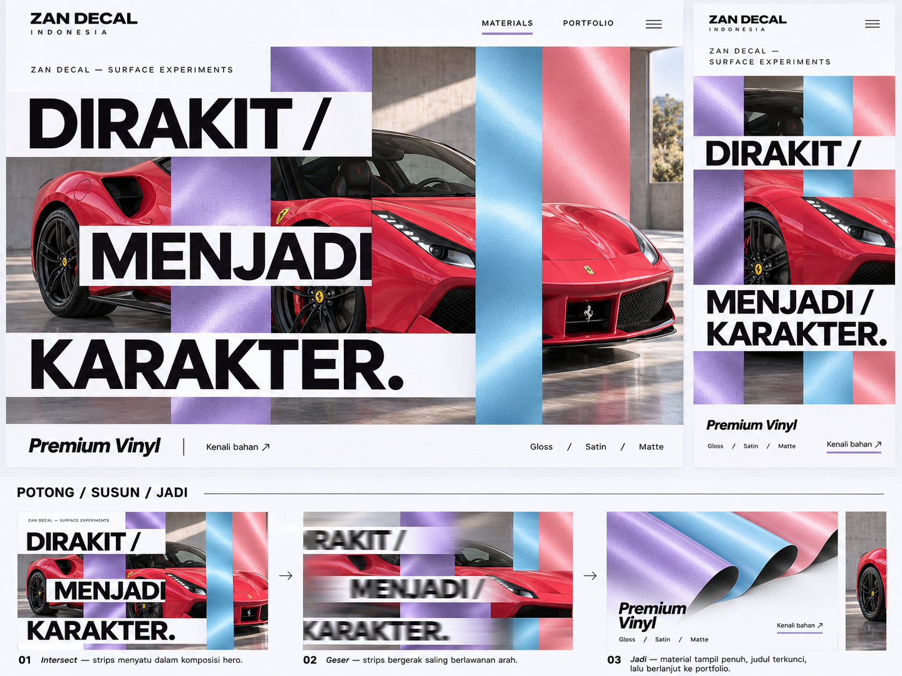
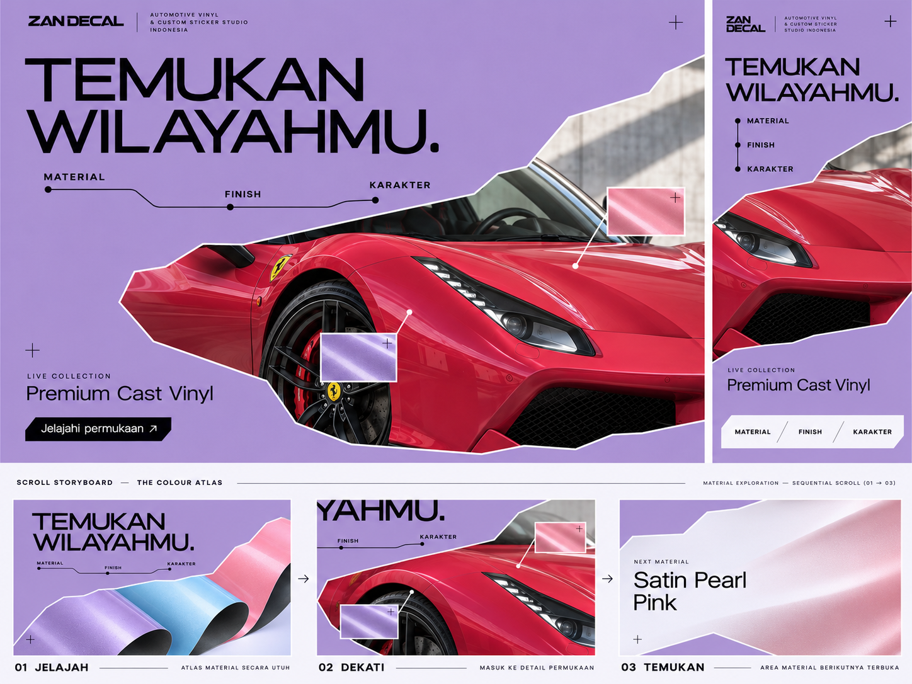

MOCKUP 1
Buka ukuran penuh ↗
MOCKUP 2
Buka ukuran penuh ↗
MOCKUP 3
Buka ukuran penuh ↗
MOCKUP 4
Buka ukuran penuh ↗
MOCKUP 5
Buka ukuran penuh ↗
Mockup visual baru untuk bagian setelah hero dan studio. Setiap gambar memuat desktop, mobile, dan storyboard gerakan scroll. Ini gambar konsep, belum animasi live.




